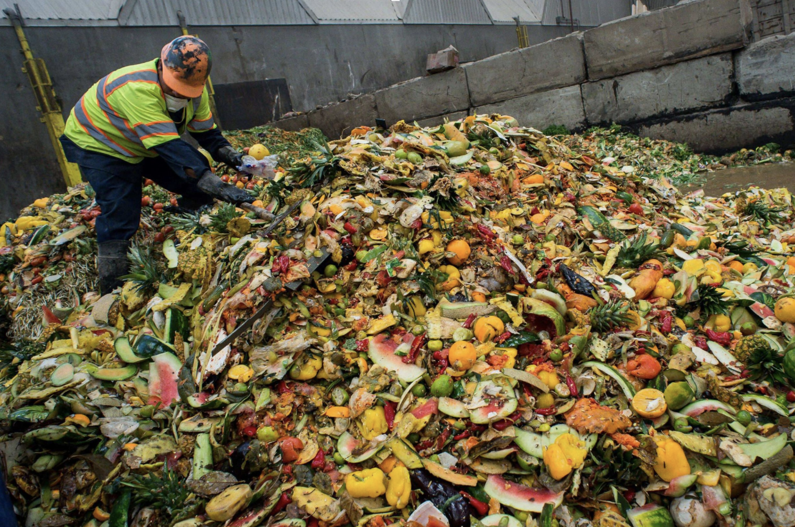
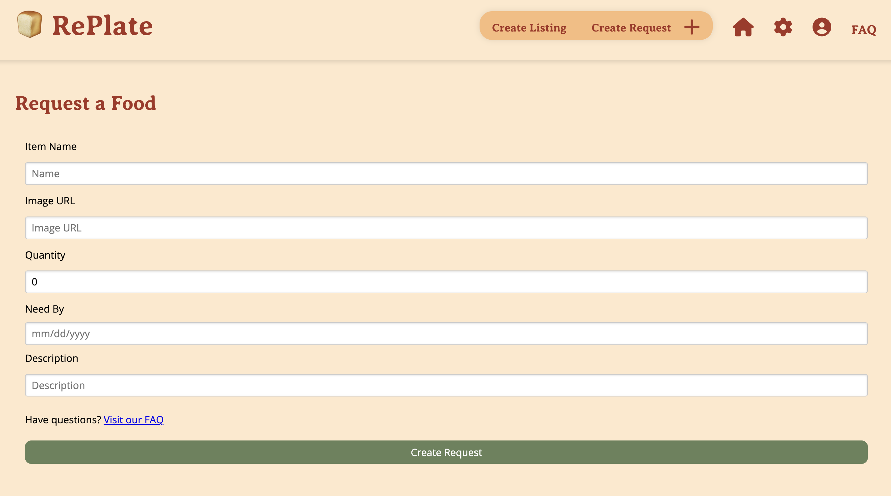
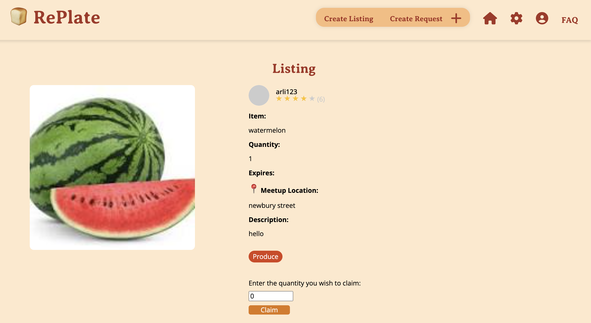

<!doctype html>
<html lang="en">
  <head>
    <meta charset="utf-8">
    <meta name="viewport" content="width=device-width, initial-scale=1">
    <title>Arli's Website</title>
    <link href="https://cdn.jsdelivr.net/npm/bootstrap@5.3.3/dist/css/bootstrap.min.css" rel="stylesheet" integrity="sha384-QWTKZyjpPEjISv5WaRU9OFeRpok6YctnYmDr5pNlyT2bRjXh0JMhjY6hW+ALEwIH" crossorigin="anonymous">
    <link href="style.css" rel="stylesheet">
    <link rel="preconnect" href="https://fonts.googleapis.com">
    <link rel="preconnect" href="https://fonts.googleapis.com">
<link rel="preconnect" href="https://fonts.gstatic.com" crossorigin>
<link rel="stylesheet" href="https://fonts.googleapis.com/css2?family=Material+Symbols+Outlined:opsz,wght,FILL,GRAD@48,400,0,0&icon_names=star_rate" />
<link href="https://fonts.googleapis.com/css2?family=Henny+Penny&family=IBM+Plex+Mono:ital,wght@0,100;0,200;0,300;0,400;0,500;0,600;0,700;1,100;1,200;1,300;1,400;1,500;1,600;1,700&display=swap" rel="stylesheet">
<link rel="stylesheet" href="https://fonts.googleapis.com/css2?family=Material+Symbols+Outlined:opsz,wght,FILL,GRAD@20..48,100..700,0..1,-50..200&icon_names=hotel_class" />
<script src="https://kit.fontawesome.com/655e2492ad.js" crossorigin="anonymous"></script>
<link rel="icon" href="favicon.png" type="favicon.png">

</head>

  <body>
    <script src="https://cdn.jsdelivr.net/npm/bootstrap@5.3.3/dist/js/bootstrap.bundle.min.js" integrity="sha384-YvpcrYf0tY3lHB60NNkmXc5s9fDVZLESaAA55NDzOxhy9GkcIdslK1eN7N6jIeHz" crossorigin="anonymous"></script>
    <script src="https://cdn.jsdelivr.net/npm/@popperjs/core@2.11.8/dist/umd/popper.min.js" integrity="sha384-I7E8VVD/ismYTF4hNIPjVp/Zjvgyol6VFvRkX/vR+Vc4jQkC+hVqc2pM8ODewa9r" crossorigin="anonymous"></script>
<script src="https://cdn.jsdelivr.net/npm/bootstrap@5.3.3/dist/js/bootstrap.min.js" integrity="sha384-0pUGZvbkm6XF6gxjEnlmuGrJXVbNuzT9qBBavbLwCsOGabYfZo0T0to5eqruptLy" crossorigin="anonymous"></script>
<script src="./javascript/script.js"> </script>
</body>
</html>


<style> 
  /* Set black background color, white text and some padding */
  
    .themeFont{ 
        font-weight: 350; 
        font:sans;
    }

    .mark-style1 {
        margin: 0 -0.4em;
        padding: 0.1em 0.4em;
        border-radius: 0.8em 0.3em;
        background: transparent;
        background-image: linear-gradient(
            to right,
            rgba(255, 225, 0, 0.1),
            rgba(255, 225, 0, 0.7) 4%,
            rgba(255, 225, 0, 0.3)
        );
        -webkit-box-decoration-break: clone;
        box-decoration-break: clone;
}

  .mark-style2 {
    margin: 0 -0.4em;
    padding: 0.1em 0.4em;
    border-radius: 0.8em 0.3em;
    background: transparent;
    background-image: linear-gradient(
      to right,
      rgba(255, 225, 0, 0.1),
      #9966CC 4%,
      rgba(255, 225, 0, 0.3)
    );
    -webkit-box-decoration-break: clone;
    box-decoration-break: clone;
  }
    .topic{
        font-weight: 200;
        font: sans; 
    }

.project-container {
  display: flex;
  justify-content: space-between; /* Space between the two sections */
  align-items: flex-start; /* Align items at the top */
  gap: 20px; /* Add spacing between the sections */
  width: 100%; /* Ensure the container spans the full width */
  box-sizing: border-box; /* Include padding and border in width calculations */
}

.project-overview{
    flex:3; 
    max-width: 70%;
}

.project-details{
    flex:1; 
    max-width: 25%;
}
.project-details h5{
   margin-bottom: 10px;
}

.project-details p{
    margin-bottom: 20px;
}

.table {
  background-color: #ad8a82; /* Match the background color */
  color: white; /* Set text color to white for contrast */
  border-color: #d9b8b0; /* Light border color for subtle contrast */
}

.table th {
  background-color: #d9b8b0; /* Slightly lighter background for headers */
  color: #5c3737; /* Darker text color for headers */
  text-align: center;
}

.table td {
  background-color: #ad8a82; /* Match the background color */
  color: rgb(0, 0, 0); /* Set text color for table cells */
}

.table-bordered td, .table-bordered th {
  border: 1px solid #d9b8b0; /* Light border color */
}

.table-striped tbody tr:nth-of-type(odd) {
  background-color: #c89d8f; /* Slightly darker shade for striped rows */
}

.image-container {
  display: flex; /* Enable Flexbox layout */
  justify-content: space-between; /* Add space between the images */
  align-items: center; /* Align images vertically */
  gap: 2%; /* Add spacing between the images */
}

.image-container img {
  width: 48%; /* Each image takes up 48% of the container width */
  height: auto; /* Maintain aspect ratio */
}

.collapsible {
  background-color: #ad8a82; /* Match your theme */
  color: black;
  cursor: pointer;
  padding: 10px;
  width: 100%;
  border: none;
  text-align: left;
  outline: none;
  font-size: 16px;
  display: flex;
  justify-content: space-between;
  align-items: center;
}

.collapsible:hover {
  background-color: #c89d8f; /* Slightly darker shade on hover */
}

.collapsible .arrow {
  transition: transform 0.3s ease; /* Smooth rotation for the arrow */
}

.collapsible.active .arrow {
  transform: rotate(90deg); /* Rotate arrow when active */
}

.content {
  padding: 0 18px;
  display: none;
  overflow: hidden;
  background-color: #ad8a82;
  margin-top: 10px;
  border-left: 3px solid #ad8a82; /* Add a subtle border */
}

</style>

<body> 

  <header> 
    <nav class="navbar navbar-inverse nav-padding">
              <div class="container-fluid text-center">
                <div class="navbar-header">
                  <i class="fa-solid fa-star star-icon"></i>

                  <a class="navbar-brand" style="font:sans-serif; font-weight: 300; padding-left: 75px; font-size: xx-large;" href="#"> ARLI MOYAO-RAMIREZ </a>
                </div>

                <div class="navbar-header">
                  <a class="textmarker-effect navbar-brand " style="font:sans-serif; font-weight: 400; padding-left: 75px;" href="index.html">Work</a>
                  <a class="navbar-brand textmarker-effect" style="font:sans-serif; font-weight: 400; padding-left: 75px;" href="about.html">About</a>
                  <a class="navbar-brand textmarker-effect" style="font:sans-serif; font-weight: 400; padding-left: 75px;" href="#">Contact</a>
          

              </div>   
              </div>
            </nav>

</header>
    
     
<body> 
    
    <section>

    <div style="padding-left:200px; padding-top: 200px;">


        <div class="col-sm-8 text-left themeFont"> 
            <h1 class="themeFont mark-style1" style="font-weight: 200;">Designing and Developing Replate 
              
            
            </h1>
            <!-- <p style="padding-top:30px">Over the span of 10 weeks, I worked in the Global Communications team where I learned various technologies to create additional functionality
              to the number provisioning process within the number management system. I was able to use the skills I learned in my classes to work on a large codebase and
              implement new features. I also learned how to work with a team of developers and how to communicate effectively with them. My favorite part of the internship was
              taking part in the Intern Hackathon where I worked with other interns to implement a Coffee Chat application that allowed employees from across the company to connect 
              with one antoher based on interests, and hobbies. </p> -->
           
              

            
              <section style="padding-top: 30px;" class="project-container"> 

                

            <div class="project-overview"> 
               <h2>Project Summary</h2>
               RePlate is a food-sharing app designed to tackle food waste and food insecurity by conenecting those with surplus food to those in need. By creating a cultural shift in how we view food waste, RePlate aims to reduce the environmental impact of food waste and provide food to those in need.
               This project was developed in collaboration with two other Wellesley students and one MIT student for the course <a href="">Software Design! </a>
     Throughout the semester, students learned not just about engineering, but the physical, lingustic, conceptual levels of software design, truly finding a real user need and creating a solution for it.
               
            </div>
            
            <div class="project-details"> 

           
                <h5 class="themeFont">Process</h5>
                <ul> 
                    <li> 
                        Phase 1: Impact Case
                    </li>
                    <li> 
                        Phase 2: Divergent Design
                    </li>
                    <li> 
                      Phase 3: Convergent Design
                    </li>
                    <li> 
                    Phase 4: Alpha Release
                    </li>
                    <li> 
                      Phase 5: Beta Release
                    </li>
                    <li> 
                 Phase 6: User Testing & Final Build
                    </li>
                </ul>
                <h5 class="themeFont">My Role</h5>
                <p> Software Design/Engineer</p>
                <h5 class="themeFont">Tools</h5>
                <p> MongoDB, Figma, Node.js/Express.js, Vercel</p>
                <h5 class="themeFont">Duration</h5>
                <p> 6 weeks</p>

            </div>
             
        </section>


        
        <section class="section">
            <h2>Overview</h2>
        </section>
           
          <div class="col-sm-8 sidenav">
            <div class="well">
              <h3 class="themeFont"> The Challenge</h3>

              <h5><ul> 
                <li> Food Insecurity</li>
                <li> Food Waste</li>
            </ul>  
            </h5>
            <p>Up to 40% of food is wasted in the US, contributing to rising carbon emissions. Additionally, 13.5% of US households experience food insecuity. There are efforts that exist to target this issue yet many of them are 
                supervised by third parties creating a disconnect with community-led solutions and destigmatizing food insecurity. </p>
            </p>
            
              
            
              <h3 style="padding-top: 30px" ; class="themeFont"> Solution</h3>
                <p> 
                    Our solution is a food-sharing app that addresses user pain points, 
                    successfully bridging the gap between those who are looking for food and 
                    those who have food they want to give away. We plan to implement money transactions, 
                    exchange rating and reporting systems to limit abusive use patterns, ensuring safety 
                    and incentivizing people to participate in food exchanges.
                </p>
                
            
            </div>  


          </div>

          <div class="image-container">
            
            
          </div>


          <h3 style="padding-top: 50px;" class="themeFont">Development Process</h3>

          <h5>NEEDFINDING: CONDUCTING USER INTERVIEWS </h5>
          <p> The interviews aimed to explore food surplus and insecurity by speaking with both experts and users. Experts discussed food distribution challenges, solutions, and potential app-based interventions. Users shared their struggles with accessing affordable, nutritious food and their perspectives 
            on a food-sharing app. 
            
            Two experts and two users were interviewed, providing valuable insights for the project. </p>

            <h5> Expert Interviews </h5>
            <p> For the expert interviewees, we wanted to focus on the primary issues with food surplus and insecurity, how communities address them, what works and what doesn’t. For Lisa, we focused on fresh produce management farmers utilize, and for Sarah, we talked about solutions on college campuses. Gauge interest in an app that connects local producers with buyers.  </p>
            <ul> 
                <li> 
                    Sarah - A farmer based in Quetzaltenango, Guatemala, who grows a variety of vegetables and fruits. She markets some of her produce while keeping a portion for personal use.

                </li>
                <li> 
                    Lisa - A student majoring in Environmental Studies at Wellesley College. She is an environmental planner intern as well as a sustainability and environmental advocate.
                </li>
            </ul> 
            <h5> User Interviews </h5>
            <p> 
                The focus for user interviews was on the challenges they face in accessing affordable, nutritious food, their experience with food sharing in their community, and their attitudes toward an app for improving food access.
  
            </p>
            <ul> 
                <li> 
                    Sveta - A 55-year-old housewife from rural Ukraine. She lives with her husband, while her children are away at college, and prepares most of their meals at home.

                </li>
                <li> 
                    Michael - An MIT student living in a cook-yourself dormitory, also serving as the president of the cooking club.

                </li>
            </ul> 

            <h5 class="themeFont"><strong> Key Finding</strong></h5>
            <p> 
                The conducted interviews highlighted the necessity of a food-sharing app, as all participants had experienced the effects of food distribution inequality—whether having an excess of food or facing scarcity. Informal sharing systems were commonly utilized among friends, family, and local communities. For instance, Sarah participates in SCOOP, a campus organization that redistributes leftover food, while Michael's community maintains a shared counter for non-perishable items. Sveta engages in a village group chat with over 1,000 members, where food and produce are frequently exchanged. However, these systems present significant limitations. Sarah's access remains constrained due to dietary restrictions, Michael noted the lack of fresh produce availability, and Sveta found that older listings quickly become buried under new messages.

Despite existing food-sharing networks, connecting individuals with surplus food to those in need remains a challenge, particularly within smaller communities. Lisa highlighted the difficulties small food producers face in maintaining a stable market. Concerns regarding trust and stigma also emerged, as both Sveta and Michael expressed hesitation about accepting food from strangers, while some interviewees were uncomfortable requesting food assistance.

Several opportunities for improvement were identified, including the implementation of allergy tags to accommodate dietary restrictions and a monetary transaction feature to support small producers. Addressing the stigma associated with food assistance, fostering a sense of community, and encouraging social connections were also recognized as priorities. To enhance trust and reliability, a rating system was proposed to ensure transparency and accountability within the platform.


            <h4> Value Sensitive Analysis (VSD) </h4>
            <p> 
                The Value Sensitive Design (VSD) framework was used to identify and address ethical considerations in the development of the RePlate app. By examining the values of stakeholders, including users, developers, and society as a whole, the VSD framework aims to ensure that the app aligns with ethical principles and promotes positive outcomes and values such as community-building, sustainability, and social responsibility. 


          </p>
          <ul> 
            <li> 
                <strong> Non-targeted use</strong> - One type of user that might be considered nefarious is someone who claims all of the free food on the app, leaving little to none for other community members. Although we don’t want to prevent people from getting what they need, allowing one person to claim everything will prevent other people from having their needs met, and will likely lead to the nefarious user wasting food themselves. Another nefarious user might list food that has gone bad or has otherwise been tampered with. An unknowing user might claim this food and become sick as a result. It is also possible for a user to be unaware that the food that they list has expired.
            </li>
            <li> 
                <strong> Sustained Friendships</strong>- People actively using the app will discover other users who probably share similar interests and values (e.g. environmental sustainability, thrifting, cooking, etc). Because of the geographic proximity of users engaging in food sharing, these friendships can be taken elsewhere. However, there needs to be a way to connect people in the app as well.

            </li>
            <li> 
                <strong>Indirect stakeholders</strong>- When people are missing a single ingredient, they tend to run to a corner store or order delivery. If the app scales up and that needs is met internally, these third parties can lose their demand. However, we cannot possibly have everything in households, and these business are used for other general purposes like regular grocery shopping, which our app does not aim nor is able to replace. Plus, these businesses can be ultimately turned into app users.

            </li>
            <li> 
                <strong>Diverse Geographies</strong>- Cities: People with extra meals, extra food from events/restaurants can participate. Remote/ country side: It could allow farmers to share their surplus or products with more people

            </li>
          </ul>

        

          <h4 style="padding-top: 30px" class="themeFont">DIVERGENT DESIGN  </h4>
          <p> During this next phase, we brainstormed for  features across different applications as inspiration cultivating a "scrapbook of comparables".  </p>
            <ul> 
            
                <li>
                    <button class="collapsible">Too Good To Go <span class="arrow">&#9654;</span></button>
                    <div class="content">
                      
                      <p style="margin-top: 10px;">
                        This design shows the user the amount of money they saved and the amount of Co2 emissions they saved by purchasing foods that are left over at the end of the day that prevented even more food waste. This could be useful to provide users with a informational perspective of how their actions make a difference, serves as an incentive.
                    </p>
                    </div>
                  </li>

                  <li>
                    <button class="collapsible">Uber Eats <span class="arrow">&#9654;</span></button>
                    <div class="content">
                      
                      <p style="margin-top: 10px;">
                        Very pleasing and convinient filtering - no need to type, what you are looking for is one click away, more options for a more selective search                    </p>
                    </div>
                </li>

                <li>
                    <button class="collapsible">Depop <span class="arrow">&#9654;</span></button>
                    <div class="content">
                      
                      <p style="margin-top: 10px;">
                        Profile page also allows see posts of one specific user. Tt makes it easier to buy from one seller and one can save on shipping. In the context of our app, if the user is looking for several items, it would be easier to make one trip to one person than get the items from different places                    </p>
                            
                        

                        <p>
                        Instructions on how to make photos and examples will be super helpful for users to make their postings more appealing.
                    </p>
                    
                    </div>
                  </li>

                  <li>
                    <button class="collapsible">Instacart <span class="arrow">&#9654;</span></button>
                    <div class="content">
                      
                      <p style="margin-top: 10px;">
                        Shows the product information as a drop down under details and provides a slide of the nutrional facts that display the ingredients - useful as a potential way to display information if users plan to exchange prepared foods                    </div>
                  </li>

                  <li>
                    <button class="collapsible">Duolingo <span class="arrow">&#9654;</span></button>
                    <div class="content">
                      
                      <p style="margin-top: 10px;">
                        Leaderboard is a way to to highlight user achievement and encourage them to keep going. We can implement a similar concept in the shape of badges or something like that.                 
            
                </li>
                <li>
                    <button class="collapsible">eBay <span class="arrow">&#9654;</span></button>
                    <div class="content">
                      
                      <p style="margin-top: 10px;">
                        Saved searches allow users to mark postings they want to come back to, and we can also use it to find out when foods the user regularly claims are being posted.                    
                </li>


            </ul>

            <h3> Storyboards </h3>
            <p> We then mapped user intent, and usage of the application. </p>
            
            <p> Wendy wants to give away surplus produce  </p>
            
               
            <p style="padding-top: 40px;"> Wanda is looking for produce </p>
            
                  

               

    <h4 style="padding-top: 50px" class="themeFont">CONVERGENT DESIGN  </h4>

     <h5> During this section, we focused on key modular concepts to incoporate in the app as the architecture for our development. 
        After the divergent design phase, we decided to focus on the following features: </h5>
        <ul> 
            <li> 
               <button class="collapsible"> <strong><pre>Listing[Author]</pre></strong> <span class="arrow">&#9654;</span> </button>
                <div class="contet">

                    <pre><code> 
<strong>Purpose:</strong> Users can share available items, specifying details to make them useful for others.
<strong>Operational principle:</strong> When a user posts a listing, it includes details like location, quantity, and an image, making it easier for others to understand its availability and suitability. 

<strong> State:</strong>
    listings: set Listing
    name: listings -> one string
    author: listings -> one Author
    meetup_location: listings -> one string
    image: listings -> one file
    description: listings -> opt string
    quantity: listings -> one number
    hidden: listings -> one Boolean

<strong>Actions:</strong>

    add( author: Author, name: string, quantity: integer, meetup_location: string, img: file)
    adds a new listing containing an author, the name of the item, the quantity of the given item, the meetup location, and an associated image is added to listings; hide is set to false and remaining is set to quantity
    delete(listing: Listing)
    listing gets removed from listings
    edit(listing: Listing, name: string, quantity: integer, img: file)
    listing in listings is edited (either new name, quantity, or image)
    getAllListings()
    returns all items in listings
    getListingsOfAuthor(author: Author)
    returns all listings where author == author
    getRemainingQuantity(listing: Listing)
    returns quantity of listing
    updateRemainingQuantity(subtract: number)
    update quanityt = quantity - subtract
    if quantity == 0 set hide to true
                    </code>

                    </pre>
                </div>
            </li>
            <li> 
                <button class="collapsible"> <strong> <pre>Claiming[Item, Claimer] </pre></strong>  <span class="arrow">&#9654;</span> </button>
                <div class="content">
                    <pre><code> 
<strong>Purpose:</strong>  Allow users to reserve items by specifying the quantity they need.
<strong>Operational principle:</strong> Users can claim part or all of an item’s available quantity.

<strong> State:</strong>
    claims: set Claim
    claimer: claims -> one Claimer
    quantity: claims -> one number
    item: claims -> one Item                     
                        
<strong>Actions:</strong>
                        
    claim(claimer: Claimer, item: Item, quantity: number)
    a new claim is added to claims with the claimer, item name and quantity
    deleleAllClaimsOnItem(item: Item)
    all claims where item == item are removed from claims
    unclaim(claim: Claim)
    claim gets removed from claims
    checkIfClaimed(item: Item)
    returns true if item is in claims
                        
                        
                    </code></pre>
                </div>
            </li>
            <li> 
                <button class="collapsible"> <strong><pre>Requesting[Requester] </pre> </strong> <span class="arrow">&#9654;</span></button>
                <pre><code> 

<strong>Purpose:</strong> Allow users to signal resource needs, enabling others to assist (by fulfilling requests).
<strong>Operational principle:</strong> When a user requests an item, it becomes visible to other users. Requests can be hidden once fulfilled, ensuring visibility for only active needs.

<strong> State:</strong>
    requests: set Request
    requester: requests -> one Requester
    name: requests -> one string
    quantity: requests -> one number
    image: requests -> opt file
    description: requests -> opt string
    hidden: listings -> one Boolean                   
                            
<strong>Actions:</strong>
                        
    add(author: Requester, Item: string, Qt: integer)
    a request is added to requests containing the requester, a given item, its quantity and (opt) its image
    hide is set to false
    delete(request: Request)
    request is removed from requests
    edit:(request: Request, Qt: integer)
    request’s quantity if updated to Qt
                        
                        
                        
                </code></pre>
            </li>
            <li> 
                <button class="collapsible"> <strong> <pre>Offering[Item, Offerer]</pre></strong> <span class="arrow">&#9654;</span></button>
                <pre><code> 

<strong>Purpose:</strong>Users can offer an item that another user needs.
<strong>Operational principle:</strong>if they offer the item needed, the user requesting the item can accept the offer.


<strong> State:</strong>
    offers: set Offer
    item: offers -> one Item
    offerer: offers -> one Offerer
    imageUrl: offers -> one string
    location: offers -> one string
    message: offers -> one string
    accepted: offers -> one Boolean               
                            
<strong>Actions:</strong>
                        
    offer( offerer: Offerer, item: Item, img: string, location: string, optional message: string)
    offer containing offerer, item, img, location and message is added to offers
    accepted is set to false
    accept(offer: Offer)
    offer’s accepted property is set to true
    editOffer(offer: Offer, opt img: file, opt message: string)
    offer’s image or message is set to new value
    removeOffer(offer: Offer)
    offer in the list of offers is removed
    removeOffersOfItem(item: Item)
    all offers whose item==item are removed from offers

                        
                          
                </code></pre>
            </li>
           
            <li> 
                <button class="collapsible"> <strong> <pre>Expiring[Item]</pre></strong> <span class="arrow">&#9654;</span></button>
                <pre><code> 


<strong>Purpose:</strong>handle expiration of short-lived resources/items
<strong>Operational principle:</strong>when an item is allocated an expiration date, it expires at that time


<strong> State:</strong>
    active: set Item
    expiry: active -> one Date             
                                
<strong>Actions:</strong>

    allocate(rsc: Item, time: int)
    rsrc not in active
    active +- rscr
    rsrc.expiry := time sec after now
    editExpiration(rsc, Item, time: int)
    system expire(out rsc: Item)
    rsrc is active: rsrc.expiry is before now
    active -= rsrc: rsrc.expiry:=none

                        
                </code></pre>
            </li
            >
            <li> 
               <button class="collapsible"> <strong> <pre>Labeling[Item]</pre></strong><span class="arrow">&#9654;</span></button>
               <pre><code> 

<strong>Purpose:</strong> Organize items under overlapping categories for easier retrieval and filtering.
<strong>Operational principle:</strong>when a user lables an item, it can be retrieved with the given label


<strong> State:</strong>
    labels: set Label
    name: labels -> one string
    labeledItems: labels -> set Item          
                                
<strong>Actions:</strong>

    create(name: string)
    label is created and added to the list of labels
    labelItem(item: Item, label: Label)
    item is added to the in labels
    getItemsWithLabel(label: Label)
    finds label in labels, then returns labeledItems for that label

                               

                
               </code></pre>
          
            </li>

            <li> 
                <button class="collapsible"> <strong> <pre>Reviewing[Entity]</pre></strong> <span class="arrow">&#9654;</span></button>
                <pre><code>


<strong>Purpose:</strong> Entities can review other entities


<strong>Operational principle:</strong> after an entity gives a rating to another entity, it can be seen by other entities


<strong> State:</strong>
    reviews: set Review
    subject: reviews -> one Entity
    reviewer: reviews -> one Entity
    rating: reviews -> one integer
    message: reviews -> opt string     
                                
<strong>Actions:</strong>

    addReview(subject: Entity, reviewer: Entity, rating: int, optional message: string)
    Add a Review to reviews with subject, reviewer, 1-5 rating, and message,
    delete(review: Review)
    Remove review from reviews
    edit(review: Review, optional text:string, optional rating: int)
    Find review in reviews and edit its text or rating
    getAverageRating(subject: Entity)
    find all of the reviews in reviews with subject as the subject, get their ratings, and calculate the average from these.


                                               
               </code></pre>

                        
                </code></pre>
          
            </li>
            <li> 
                <button class="collapsible"> <strong> <pre>Reporting[Entity]</pre></strong> <span class="arrow">&#9654;</span></button>
                <pre><code> 


<strong>Purpose:</strong> Enable entities to report misbehavior, enforce thresholds for flagging subjects as reported, and provide querying capabilities for moderation.


<strong>Operational principle:</strong>When an entity is reported by at least two others, it is flagged as "reported" for moderation. Each entity can only report another once, and self-reporting is not allowed. 


<strong> State:</strong>
    reports: set Reports
    reporter: reports-> one Entity
    subject: reports -> one Entity
    message: report -> opt string 
                                
<strong>Actions:</strong>
    report(reporter: Entity, subject: Entity)
    adds a new Report to reports, with reporter and subject. If getNumberOfReports(subject) >= 2 and subject isn’t already in reported, add subject to reported.
    checkIfUserReported(subject: Entity)
    returns true if subject is in reported, false otherwise
    getNumberOfReports(subject: Entity)
    gets the Reports from reports where subject == subject and counts them
    getReportsOfSubject(subject: Entity)
    gets the Reports from reports where subject == subject and returns them
                        
                </code></pre>
            
            </li>


     </h3>


     
        <h3 style="padding-top: 70px;" class="themeFont">Conclusion</h3>
        <p>This collaboration and for the Software Design course showcasing how technology with a foundational <strong> software design </strong> is the building blocks to <strong> impactful and user-centric</strong> products. It can be visited <a href="https://replate-eight.vercel.app/">here</a>. </p>

            
            </div>  

          </div>

      </div>
      
      <footer class="container-fluid text-center">
        
      </footer>
      
      </body>


    </div>
</body>